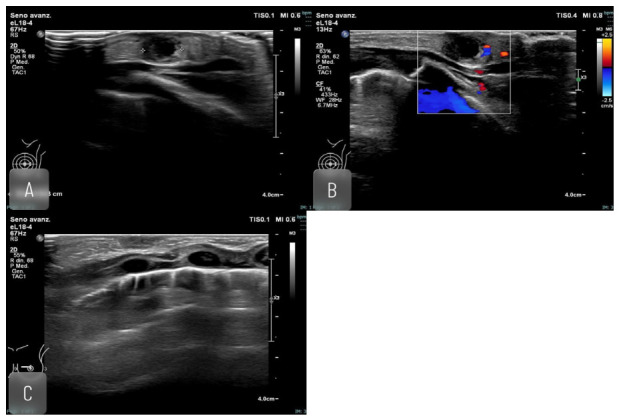

Ficha del catálogo
Mastitis y absceso mamario
- Sistema
- Mama
- Modalidad
- US
- Región
- Mama
- Dificultad
- Intermedio
La mastitis es la inflamación del tejido mamario, con frecuencia infecciosa, que puede evolucionar hacia la formación de un absceso. La forma puerperal aparece durante la lactancia y suele localizarse en la periferia, mientras que la no puerperal se relaciona con ectasia ductal y afecta sobre todo a la región retroareolar. El diagnóstico por imagen guía el drenaje y sirve para descartar un carcinoma inflamatorio.
Técnica
El ultrasonido con transductor lineal de alta frecuencia es la técnica de elección porque distingue el flemón del absceso ya organizado y permite el drenaje guiado. La mamografía tiene valor limitado en la fase aguda por el dolor y por el edema, pero es necesaria cuando hay que descartar malignidad. La resonancia se reserva para casos complejos o recurrentes.
Qué observar
- Colección con contenido ecogénico y detritos móviles
- Pared engrosada con hiperemia periférica en el Doppler
- Ausencia de flujo dentro del contenido
- Edema del tejido subcutáneo con aspecto reticular y engrosamiento cutáneo
- Trayectos fistulosos hacia la piel o hacia la areola
- Adenopatías axilares reactivas de morfología conservada
Hallazgos
En la fase inicial se aprecia un área hipoecogénica mal definida con aumento de la ecogenicidad de la grasa y del flujo, sin colección drenable. Cuando el proceso se organiza aparece una colección de contenido heterogéneo con detritos móviles, pared gruesa e hiperemia periférica, sin flujo interno. El engrosamiento de la piel y el edema acompañan al cuadro y pueden persistir después del tratamiento.
Perlas
El carcinoma inflamatorio puede reproducir todos los signos de una mastitis, incluidos el edema, el engrosamiento cutáneo y la hiperemia. Por ello, cuando el cuadro no mejora tras un tratamiento antibiótico adecuado, la conducta correcta es completar el estudio con mamografía y biopsia de la piel y del parénquima, no repetir ciclos de antibiótico.
Diagnóstico diferencial
- Carcinoma inflamatorio
- No responde al tratamiento antibiótico, muestra engrosamiento cutáneo difuso y adenopatías de aspecto patológico.
- Galactocele
- Aparece durante o tras la lactancia, es indoloro y puede mostrar nivel entre grasa y contenido líquido.
- Quiste complicado
- Tiene pared fina, contenido con ecos homogéneos y no se acompaña de signos inflamatorios.
- Necrosis grasa
- Existe antecedente traumático o quirúrgico y con el tiempo aparecen calcificaciones de centro lucente.
Simuladores
- Hematoma en organización tras una biopsia
- Ectasia ductal con contenido espeso
- Ganglio intramamario inflamado
Por modalidad
- US
- Es la técnica de elección, separa flemón de absceso, valora la extensión y permite el drenaje guiado.
- RM
- Se reserva para cuadros complejos o recurrentes y para valorar la extensión cuando el ultrasonido no basta.
Protocolo
Ultrasonido mamario con transductor lineal de alta frecuencia y presión suave por el dolor, explorando toda la mama y la axila, con Doppler color para valorar la hiperemia y confirmar que el contenido es avascular. Se documenta el tamaño de la colección y su profundidad para planificar la punción. El seguimiento por imagen tras el tratamiento es necesario para confirmar la resolución completa.
Clasificación
Errores frecuentes
- Repetir ciclos de antibiótico ante una mastitis que no responde sin descartar carcinoma inflamatorio
- Confundir un flemón sin colección con un absceso e intentar drenarlo
- No documentar la resolución completa en el control tras el tratamiento

mastitis absceso mamario lactancia drenaje guiado carcinoma inflamatorio ecografía mamaria edema cutáneo